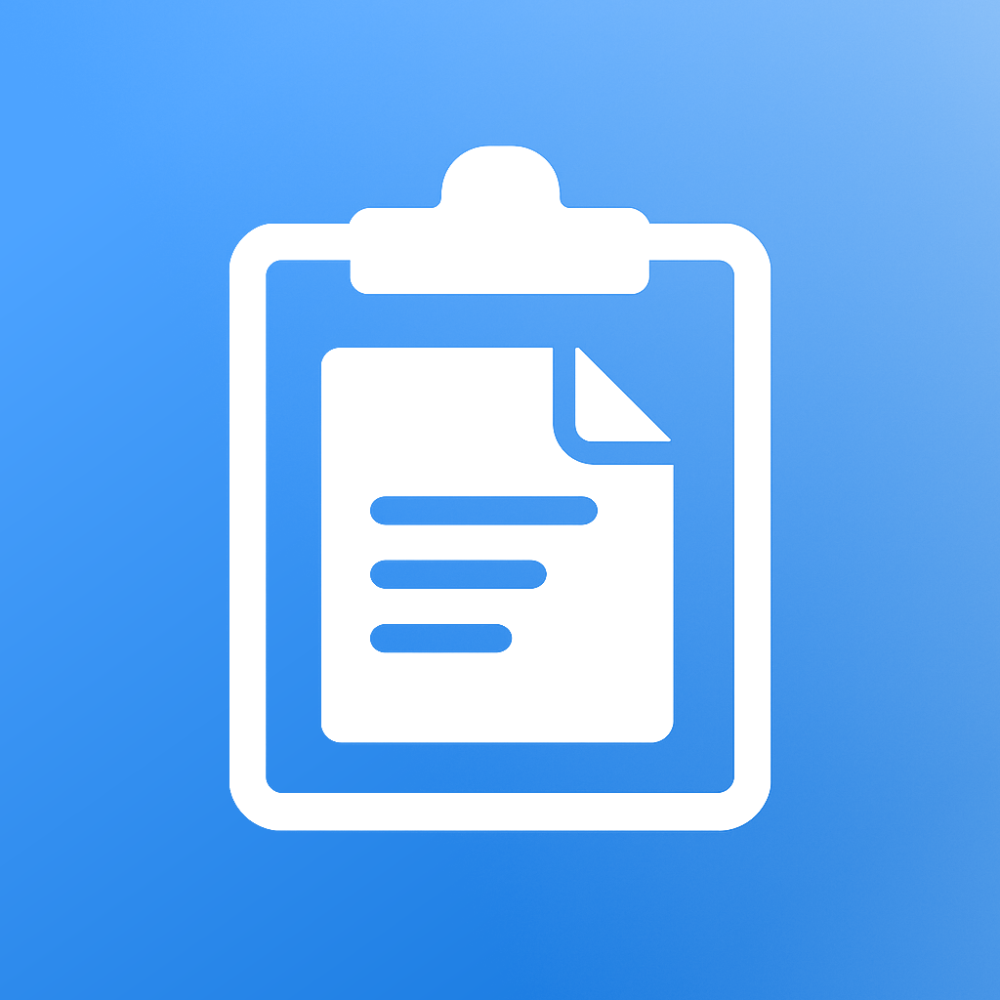

Light Clipboard
A keyboard that types your saved text into any app. One tap, no copying.
Your email address, a phone number, the reply you send twenty times a week, an address, a block of hashtags. Save it once in the app, then tap it into any app from the Light Clipboard keyboard. The keyboard never asks for Full Access: it has no network, no account and no analytics, and it never sees what you type.
Download on the App StoreFree for three snippets, for iPhone and iPad, iOS 18.2 or later. In 30 languages.
Turning the keyboard on
Light Clipboard saves snippets in the app, and a keyboard types them into any other app. iOS only lets you add that keyboard from Settings:
- Open Settings, then General, then Keyboard, then Keyboards.
- Tap Add New Keyboard and choose Light Clipboard.
In any app, tap a text field, hold the globe key to switch keyboards, and tap a snippet to type it.
The keyboard is empty even though I saved snippets
Open Light Clipboard once after saving them, then raise the keyboard again. If it is still empty, remove the keyboard at Settings, General, Keyboard, Keyboards and add it back.
Does the keyboard need Full Access?
No. Light Clipboard never asks for it. The keyboard reads the snippets you saved in the app, makes no network requests, and records nothing you type. See the privacy policy, or read what an iOS keyboard can't do without Full Access.
I paid, but the limit is still there
Open the app, tap the crown, and choose Restore Purchases. If it still does not lift, write to us with the Apple Account you paid from.
Snippets and limits
- Three snippets are free, with no time limit.
- Slot packs add 3, 5, 10 or 20 more, and they stack.
- Unlimited Monthly and Unlimited Yearly lift the limit while active, and both start with a free week; Lifetime Unlock lifts it permanently.
- Give a snippet a name, drag to reorder, hold one to copy, edit or delete it.
- Copy a snippet, or save a new one, from the Shortcuts app or by asking Siri.
Deleting your data
Everything lives on your device. Deleting the app removes every snippet with it. Nothing is stored anywhere else.
Contact
Write to zhafiarov.rus@yahoo.com. Please say which iOS version you are on and what you expected to happen.